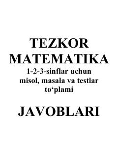

TM1-3-sinf o'quvchilari uchun tezkor matematika to'plamining javoblari.
Ushbu qo'llanma 1-2-3-sinf o'quvchilari uchun mo'ljallangan tezkor matematika darsliklaridagi misol, masala va testlar to'plamining javoblarini o'z ichiga oladi. Kitobda turli darslar bo'yicha arifmetik amallar, tenglamalar va mantiqiy masalalarning to'g'ri javoblari keltirilgan. Undan o'quvchilar o'z bilimlarini tekshirish va o'qituvchilar dars jarayonini nazorat qilish uchun foydalanishlari mumkin.